Zielsetzung
In 2003 habe ich einen ´Elektrostatik-Stromgenerator´ konzipiert (siehe Animation), bei welchem Strom aus der Verschiebung von Ladung generiert werden sollte. Bei Kondensatoren ändern sich die Kapazität und Spannung, wenn zwischen den Platten ein Dielektrikum eingefügt wird. In einem rotierenden System müsste somit Ladung von Platten mit momentan geringer Kapazität hinüber fließen zu Platten mit momentan höherer Aufnahmefähigkeit. Fachleute bestätigten die korrekte Anwendung der Gesetzmäßigkeiten, dennoch war diese Konzeption ein totaler Flop. Nachdem ich nun die Erscheinungen der Elektrizität konsequent als Bewegungsmuster des Äthers betrachte, habe ich diese Problematik noch einmal analysiert.
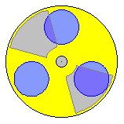
Kondensatoren werden heute in fast allen elektrischen / elektronischen Geräten in vielen Bauformen und für unterschiedliche Zwecke eingesetzt. Offensichtlich arbeiten sie problemlos nach Gesetzmäßigkeiten, die nicht mehr hinterfragt werden müssen. Dennoch sind manche Eigenschaften und Reaktionen von Kondensatoren noch immer ´mysteriös´. Vermutlich werden viele Leser in den folgenden Überlegungen ihre eigenen Verständnis-Fragen wieder finden. Als Ausgangsbasis soll eine ´Handreichung zum Abitur Physik 2011´ dienen, in welcher die Schulbehörde Hamburg präzise Beispiel-Aufgaben und exakte Lösungen anbietet. Kursiv geschrieben sind Zitate aus dieser Unterlage. Anschließend werden vermeintliche Widersprüche untersucht, die man in bekannten Lehrsätzen der Fachliteratur und im Internet zuhauf findet. Erst aus Sicht des Äthers und seiner Bewegungen ergeben sich klare Zusammenhänge. Die Schlussfolgerungen sollen zur Konzipierung eines Strom-Generators im nächsten Kapitel tauglich sein.
Physik-Abitur
Oben genannte ´Handreichung´ betrifft den Vergleich eines modernen Kondensators (siehe Bild 09.13.01 oben links) mit konventionellen Platten-Kondensatoren. Allgemeiner Teil: Ein ´Goldcap´ ist ein Kondensator mit sehr hoher Kapazität, der sich im Vergleich mit Folienkondensatoren durch eine sehr kleine Baugröße auszeichnet. Für einen bestimmten Typ gelten folgende Daten: Kapazität 1.0 F, Größe des zylinderförmigen Gehäuses: Durchmesser 21 mm, Höhe 10 mm. Aufgabe 1.1: Berechnen Sie die Plattenfläche eines Plattenkondensators, der bei einem Plattenabstand von 50 Mikrometer die Kapazität von 1.0 F aufweist. Rechnen Sie mit der Dielektrizitätskonstanten von Vakuum.
Die Lösung ist präzise dargestellt: Kapazität C = e0*A/d, somit die Fläche A = d*C/e0, somit A = 50*10^-6*1.0/8.8542*10^-12 mVmAs/AsV ergibt A = 5.65 km^2.
Es wird vermerkt: Die Lösung ist sicher durch das Ausmaß der Fläche unerwartet. Also kein Tippfehler und kein Rechenfehler, wenngleich die experimentelle Überprüfung z.B. die Fläche des Flughafens Hamburg-Fuhlsbüttel beanspruchen würde (gelb markiert oben rechts im Bild).
Die Aufgabe 1.2 lautet: Berechnen Sie die Volumina des angegebenen Goldcaps und des Plattenkondensators aus Teilaufgabe 1.1, wenn das Eigenvolumen der Platten außer Acht gelassen wird. Die einfache Rechnung liefert als Ergebnis: Das Volumen des Plattenkondensators ist 81 Millionen mal größer als das Volumen des Goldcaps. Unerwartet hierbei ist lediglich, warum nur der Abstand zwischen den Platten und nicht wenigstens 1 mm Materialstärke einbezogen wurde (somit viele Milliarden anstelle einiger Millionen ergäbe).
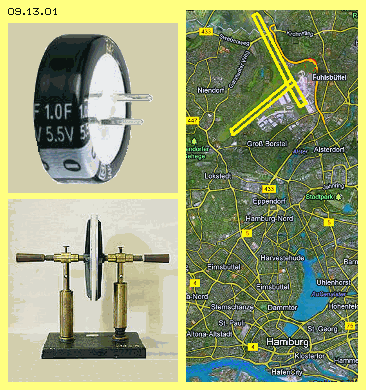
Die dritte Teilaufgabe betrifft einen anschaulichen Vergleich mit einem bekannten Platten-Kondensator (siehe Foto aus dem Schul-Museum in Bild 09.13.01 unten links). Teilaufgabe 1.3: In einem Schulexperiment mit einem Plattenkondensator ist die Plattenfläche 314 cm^2, der Plattenabstand 2 mm und die angelegte Spannung 5 kV. Vergleichen Sie die Kapazität des Plattenkondensators, die Ladung auf den Platten und die gespeicherte Energie mit dem Goldcap 1 F, wenn dieser an 1.2 V aufgeladen wurde. Hier ist wieder die bekannte Kapazitätsformel C= e0*A/d mit den Werten 8.854*10^-12 sowie 314 cm^2 und 2 mm zu rechnen, was C=1.39*10^-10 F ergibt. Die Ladung Q (in Coulomb bzw. Amperesekunde) ist = Kapazität C (in Farad) * Spannung (in Volt), hier somit Q=1.39*10^-10*5000 = 0.000000695 Coulomb bzw. 695 nC. Für die gespeicherte Energie gilt die Formel W (in Joule bzw. Ws) = Kapazität (in Farad) mal Spannung zum Quadrat, hier somit W=0.5*1.39*10^-10*5000^2 = 0.00174 Ws bzw. 1.74 mWs. Trotz hoher Spannung speichert dieser alte Plattenkondensator anscheinend nur Ladung im Mikro-Coulomb-Bereich und Energie bzw. Arbeit nur im Milli-Watt-Bereich.
Beim Goldcap sind die Rechnungen einfacher mit der Kapazität 1 F und der Spannung 1.2 V. Ladung = Kapazität * Spannung, somit hier Q=1F*1.2V=1.2 Coulomb. Gespeicherte Energie W=0.5*1.2F*1.2^2V = 0.72 Ws. Der Goldcap erweist sich als klarer Sieger mit hundertfach höherer Energie, millionenfach höherer Ladung, milliardenfach höherer Kapazität.
Wozu werden solche Aufgaben gestellt? Um den technischen Fortschritt aufzuzeigen? Oder damit junge Leute die Formeln und Werte auswendig lernen und möglichst kritiklos anwenden? Ich habe diese ´behördlich garantiert richtigen´ Rechnungen hier aufgeführt, weil ich mich nie getraut hätte, den Goldcap 1F 5.5V einem ´Fuhlsbüttel-Kondensator´ gegenüber zu stellen. Der Vergleich kann nicht stimmig sein: mit einer AAA-Batterie sind Kupferoberflächen vieler Quadratkilometer nicht zu laden. Vielmehr stellen sie eine perfekte Erdung mit praktisch unbegrenzter Kapazität dar. Schlagartig könnten sie alle Hamburger Kraftwerke ´leer-saugen´, mit garantiertem Super-GAU.
Bei den modernen Elektrolytkondensatoren finden intern auch chemo-elektrische Prozesse statt (und insofern sind obige Vergleiche ohnehin fragwürdig). Andererseits wurden die Gesetze der Elektrizität mit einfachen Geräten wie diesem Schul-Kondensator schon vor langer Zeit erkannt und die Werte können bei Schul-Experimenten zuverlässig bestätigt werden (allerdings bei 5 kV nicht ganz ungefährlich). Die Formeln sind also stimmig - und müssen logischerweise stimmig sein, weil alle Begriffe im Zirkelschluss definiert sind (was in der Physik die Regel ist). Auch die Messergebnisse sind in sich stimmig - weil auch sie in gegenseitiger Abhängigkeit geeicht sind. Obwohl dieses relativ überschaubare Sachgebiet bestens untersucht und belegt ist, bleiben manche Erscheinungen seltsam ´mysteriös´. Könnte es nach so langer Zeit noch immer Missverständnisse oder Fehlinterpretationen geben?
Fakten und Formeln
Nachfolgend werden nurmehr diese einfachen Kondensatoren diskutiert, indem bekannte Lehrsätze (kursiv geschrieben) auf mögliche Widersprüche untersucht werden. In Bild 09.13.02 sind vier Kondensatoren schematisch dargestellt. Oben links bei A wurde eine Platte negativ (grün) und die andere positiv (rot) aufgeladen. Die Spannung zwischen beiden Platten kann durch ein Voltmeter (VM, blau) angezeigt werden. Die Ladung Q ist umso größer, je größer die Kapazität C und je höher die Spannung U ist (entsprechend zur Formel Q=C*U). Es ist einsichtig, dass bei zweifach größeren Flächen (oben rechts bei B) die doppelte Aufnahmefähigkeit gegeben ist. Bei gleicher Spannung kann der Kondensator entsprechend mehr Ladung aufnehmen.
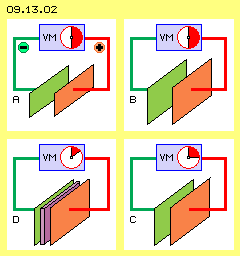
Unten rechts im Bild bei C sind die Platten auf halben Abstand zusammen gerückt (alles andere ist unverändert). Als Ergebnis wird eine Halbierung der Spannung gemessen. Da sich an der Ladung im System nichts geändert hat, muss sich gemäß Q=C*U die Kapazität verdoppelt haben. Es wurde daraus geschlossen und definiert, dass die Aufnahmefähigkeit proportional zur Fläche ist und umgekehrt proportional zum Abstand zwischen den Platten ansteigt (also C=A/d gilt). Das ist einigermaßen erstaunlich bzw. kaum zu verstehen: der Raum wird enger und dennoch soll dessen Aufnahmefähigkeit für Ladung größer sein.
Links unten im Bild bei D wurde der Raum zwischen den Platten durch ein nicht-leitendes Material (Dielektrikum, violett) ausgefüllt. Man könnte erwarten, dass diese ´massive´ Einschränkung das elektrische Feld behindert und tatsächlich ist wiederum eine deutlich geringere Spannung zu messen. Daraus wird geschlossen, dass durch Einfügen des Dielektrikums die Aufnahmefähigkeit nochmals gesteigert wird. Daraus resultiert andererseits, dass bei einer bestimmten Spannung der Kondensator um so mehr Ladung speichern kann, je größer diese Aufnahmefähigkeit ist. Die ´relative Permittivität´ wird in der Kapazitäts-Formel C=er*A/d als Faktor zum Ausdruck gebracht. Gegenüber dem Vakuum bzw. der Luft wirken diverse Materialien unterschiedlich stark, z.B. Teflon mit einem Faktor er von etwa 2, Papier 3, ABS 4, Epoxy 5, Porzellan 6, Glas 8 und spezielle Stoffe vielfach mehr. Dieser Effekt wird erklärt durch Verschiebung von (positiver/negativer) Ladung an den Oberflächen bzw. in den Spalten zwischen den Elektroden und dem Dielektrikum (was äußerst fraglich ist, siehe unten).
Widersprüche
Also noch einmal von vorn: Kondensatoren werden in vielfacher Form für unterschiedliche Zwecke eingesetzt. Generell jedoch gilt, dass Kondensatoren einer Spannungsänderung entgegen wirken. Kondensatoren haben die Fähigkeit, Ladung zu speichern. Diese wird ´elektrische Kapazität´ genannt. Generell wird ein Kondensator durch zwei Elektroden gebildet, im einfachsten Fall durch zwei Kupferplatten. In aller Regel befindet sich dazwischen eine Schicht aus nicht-leitendem Material, das ´Dielektrikum´ genannt wird.
Das sind die bekannten Sachverhalte, denen dubiose Aussagen folgen: Ein elektrischer Stromfluss durch den Kondensator hindurch lädt die eine Elektrode positiv, die andere negativ auf. Das kann so nicht sein, weil ein Isolator ja gerade den Stromfluss unterbinden soll. Im Kondensator ´schwappt´ bestenfalls etwas Ladung herüber und hinüber. Die Spannung ist proportional zur gespeicherten Ladung. Das ist prinzipiell falsch: eine Spannung von 2 Volt kann sich auch aus 5002-5000 oder 12-10 oder 2-0 ergeben, aber niemals aus der Differenz zwischen +1 und -1. Egal wie oft es in Lehrbüchern wiederholt wird: es gibt keine positive Ladung, es gibt keine ´Positronen´, es gibt z.B. nur ´Löcher´ in Halbleitern (was selbst Abiturienten gelehrt wird). Dieses Plus/Minus-Denken ist kategorisch falsch und führt zu völlig falschen Vorstellungen.
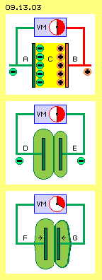
In Bild 09.13.03 sind nochmals Kondensatoren skizziert mit jeweils zwei Platten und einem Voltmeter (VM, blau). Oben ist die konventionelle Vorstellung skizziert: die eine Platte (A, grün) ist negativ und die andere Platte (B, rot) ist positiv geladen, indem ´Ladungsträger´ an den Oberflächen haften. Dazwischen spannt sich ein elektrisches Feld (C, gelb), das eine anziehende Kraft in Richtung Plus-Elektrode aufweisen soll. Wenn es aber keine positive Ladung bzw. positive Ladungsträger gibt und keine Anziehung durch das Nichts des Raumes hindurch vorstellbar ist - können diese Vorstellungen die Realität nicht zutreffend abbilden.
Wenn man die Platten eines geladenen Kondensators näher zusammen schiebt (z.B. unten im Bild die Platten F und G), ist eine gewisse Kraft aufzuwenden. Das widerspricht der Gesetzmäßigkeit, dass Plus und Minus gegenseitig anziehend wirken sollen. Umgekehrt ist dieser Gegendruck ein eindeutiger Beweis dafür, dass die Ladungen auf beiden Platten negativ sein müssen (weil gleichnamige Ladungen tatsächlich gegenseitig abstoßend wirken).
Es kann auf beiden Platten also nur negative Ladungen geben. Normalerweise sind beide Ladungen von unterschiedlicher Stärke, d.h. gegenüber Erde weist jede Platte eine andere Spannung auf. Das Voltmeter zwischen den Platten zeigt deren relative Differenz. Sie bringt zum Ausdruck, wie stark der generelle Äther-Druck einen Ausgleich der Ladungen herbei führen würde, wenn beide Bereiche miteinander leitend verbunden wären (siehe Kapitel 09.04. Ladung). Hier ist also nur die Aussage korrekt, dass die Spannung proportional zur Differenz der negativen Ladungen auf den beiden Elektroden ist (egal auf welchem Niveau). Die geringst mögliche Spannung gegen Erde ist null. Diese Platte trägt aber dennoch Ladung - genau so viel wie die generelle Ladung aller Materie momentan an diesem Ort der Erdoberfläche.
Mittig in diesem Bild 09.13.03 ist die reale Situation nach Aufladung eines Kondensators schematisch dargestellt. Jede Ladung erzeugt in ihrer Umgebung ein elektrisches Feld. Diese ´Ladungswolken´ sind durch hellgrüne Bereiche markiert. Die Platte D ist umgeben von einer dicken Schicht Ladung, die Platte E weist eine kleinere ´Aura´ auf. Die Differenz wird durch das Voltmeter als Spannung angezeigt. Das beobachtete ´Phänomen´ ist nun, dass die Spannung geringer wird, wenn die Platten näher zueinander gerückt werden (siehe Pfeile unten bei F und G). Wie oben dargestellt, soll dieses gleichbedeutend mit einer Zunahme der Kapazität sein. Eine einfache und logische Erklärung ergibt sich erst, wenn man Äther als eine reale Substanz versteht und Ladung als ein bestimmtes Bewegungsmuster von Äther im Äther.
Reale Ätherbewegungen
Schon die Aussage, dass eine elektrische Ladung um sich herum ein elektrisches Feld erzeugt, ist fragwürdig: eine Ladung an einer Oberfläche ist nicht an das Vorhandensein freier Elektronen gebunden, vielmehr ist die Ladung identisch mit dem elektrischen Feld. Die Aussage, das Feld ist eine Eigenschaft des Raumes und bedarf keines Überträgers für die darin wirksamen Kräfte, kann also auch im ´leeren Raum´ existieren, ist nicht haltbar: materiell wirksame Kräfte können nicht per ´Nichts´ übertragen werden (und schon gar nicht die vermeintlichen Anziehungskräfte). Das geht nur, wenn der Äther eine reale Substanz ist (sogar die einzig materiell existierende) und Kräfte darin durch interne Bewegung wirksam werden.
Ladung ist keinesfalls nur ein ´fiktives Feld um ein festes Elektron-Teilchen´. Die Ladung selbst ist ein Bereich geordneten Äther-Schwingens (und freie Elektronen sind nur ein ´runder Tropfen´ entsprechenden Bewegungsmusters). Ohne Struktur ist dagegen der ´Freie Äther´ der Umgebung, wo Bewegung nur auf kurzen Bahnabschnitten stattfindet (z.B. resultierend aus der Überlagerung aller durch den Äther rasenden Strahlung). Dieses chaotische Schwirren rüttelt von außen an die Bereiche geordneter Ätherbewegung. Dadurch wird das flächige Bewegungsmuster der Ladung an die Oberflächen der Elektroden gedrückt. Je stärker eine Ladung ist, desto weiter reicht ihre Bewegungsstruktur in den Äther-Raum hinaus. Der allgemeine Äther-Druck wirkt dahingehend, dass Ladung auf einer materiellen Oberfläche möglichst gleichförmig verteilt wird. Dadurch wird z.B. eine Spannungsdifferenz in Form von Strom entlang von Leitern ausgeglichen (wie in früheren Kapiteln ausführlich beschrieben).
Ladung ist ein synchrones Schwingen von Äther über einer Leiter-Oberfläche. Die Intensität der Bewegung wird von der Oberfläche auswärts zunehmend schwächer. Letztlich gibt es einen fließenden Übergang zum Freien Äther. In vorigem Bild sind diese Bereiche hellgrün markiert rund um die Elektroden. Es sind dunkelgrüne Grenzlinien markiert, die den fließenden Übergang zum Freien Äther repräsentieren. Zwischen den Kondensatorplatten besteht also nicht ein elektrisches Feld (zwischen Plus und Minus), vielmehr treffen dort zwei (negative) Ladungs-Bereiche zusammen.
Ladung ist ein Äther-Schwingen mit linksdrehend schlagender Komponente (Details siehe frühere Kapitel). An den inneren, gegenüber liegenden Flächen ist das Schwingen gegenläufig. An der Grenzfläche kommt ´Stress´ auf (weil im lückenlosen Äther auf kurzer Distanz keine entgegen gesetzten Bewegungen möglich sind). Beide Bewegungsmuster stoßen sich darum gegenseitig ab (wie bekannt bei zwei benachbarten negativen ´Punkt-Ladungen´ gängiger Lehre).
Fehl-Interpretation
Wenn der Abstand zwischen Kondensatorplatten verringert wird, verringt sich die Spannung. Dieser Sachverhalt ist in Bild 09.13.03 schematisch dargestellt (siehe Pfeile bei F und G). Dieses ´Phänomen´ ist leicht zu erklären: das stärkere Ladungsvolumen der linken Platte drückt das geringere Ladungsvolumen der rechten Platte auf die Rückseite der rechten Platte. Deren bislang relativ kleines Volumen wird ausgeweitet und weist nun eine größere Oberfläche auf. Der Freie Äther drückt Ladung über die Leitungen in das Voltmeter in Relation der beiden Ladungs-Oberflächen. Deren Differenz ist nun geringer und somit zeigt das Voltmeter jetzt eine geringere Spannung.
Ein durchaus vergleichbares Beispiel macht die Reaktion verständlich: wenn zwei Luft-Ballone unterschiedlich stark aufgeblasen sind und aneinander gedrückt werden, gleicht sich der Innendruck an. Das Volumen des bislang kleineren Ballons wird größer und damit die Differenz beider Ballon-Oberflächen kleiner.
Wenn bei unveränderter Ladung die Spannung zwischen den Platten geringer wird, muss nach der Kondensator-Formel Q=C*U die Kapazität der Anordnung entsprechend höher sein. Mit diesem formel-verhaftetem Denken wird das Symptom der geringeren Spannung vollkommen falsch interpretiert. Das Volumen zwischen den Platten wird geringer, dort also auch die Aufnahmefähigkeit für Ladung. Die Ladung bleibt gleich, sie wird nur räumlich verlagert in den ´Wulst´ an den Rändern und auf die Rückseiten der Platten sowie in die Zuleitungen. Dieser vermeintliche ´Kapazitäts-Faktor´ ist eher ein Maßstab für die Beschränkung der Ladungs-Speicherung. Wenn ein Kondensator die Spannungsschwankungen in einem Schaltkreis abfedern soll, so beschreibt seine ´elektrische Kapazität´ eher den ´Härtegrad der Feder bzw. des Stoßdämpfers´.
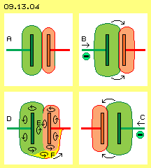
In Bild 09.13.04 ist oben links bei A die Ausgangs-Situation dargestellt. Die linke Platte ist stärker geladen als die rechte (hier ist die jeweils schwächere Ladungs-Aura rot markiert). Bei B (rechts oben im Bild) ist die Spannung von links angewachsen, so dass sich beide Ladungen nach rechts verlagern. Wenn anschließend die Spannung links wieder geringer wird, werden beide Ladungsbereiche zurück schwappen. Damit werden Spannungs-Spitzen in einem Schaltkreis abgefedert.
Wenn dieser Kondensator in einen Wechselstrom-Schaltkreis eingebaut ist, wird anschließend von rechts größere Spannung anliegen (siehe rechts unten bei C) und beide Ladungen werden jetzt nach links verlagert. Es entsteht der Eindruck, als liefe der Wechselstrom durch den Kondensator hindurch, im Wechsel von links nach rechts (bei B) und zurück (bei C).
In diesem Bild unten links bei D ist skizziert, warum sich beide negative Felder gegenseitig abstoßen. Alle Ladung schwingt synchron immer linksdrehend, jeweils von der Oberfläche nach außen betrachtet (wie hier durch die Kreispfeile markiert ist). Zwischen den Platten (bei E) treffen beide Bewegungen gegenläufig zusammen. Daraus ergibt sich ´Stress´ im Äther, der nur beseitigt wird, wenn beide Ladungsbereiche ausreichend auf Abstand gehen.
An den oberen Wulsten schwingen beide Ladungen gleichsinnig linksdrehend. Erst etwas unterhalb in den Einbuchtungen werden beide Bewegungen gegenläufig. Wenn aber eine zu große Spannungs-Spitze auftritt oder zu viel Ladung in den Kondensator gepumpt wird, kommt es zum Kurzschluss. Die seitliche Ausdehnung der Volumina bildet dann eine gemeinsame Rundung (gelb markiert unten bei F). Dort schwingen dann die Ladungen durchgehend synchron linksdrehend (siehe dort benachbarte Kreispfeile). Es kommt zu einem Ausgleich zwischen beiden Ladungen bzw. zum Kurzschluss (oder Überschlag), bei der Strom von der Quelle zur Senke plötzlich widerstandslos fließt (siehe Pfeil bei F).
Dielektrikum
Um noch höhere ´Kapazität´ zu erreichen, werden Vielschicht-Kondensatoren gebaut, wie in Bild 09.13.05 oben bei A schematisch skizziert ist. An den Elektroden sind kamm-artig mehrere Platten installiert, die zueinander versetzt angeordnet und jeweils durch ein Dielektrikum voneinander getrennt sind. Da nun beide Seiten jeder Platte eine Ladung tragen kann, ist auch bei kleiner Bauform eine große Leiterfläche verfügbar. Da der Abstand zwischen den Platten sehr gering ist, müssten solche Kondensatoren nach gängiger Formel eine hohe Kapazität aufweisen.
In diesem Bild sind die roten Platten nur ´halb voll´ geladen und lassen für Freien Äther noch Raum (weiß) bis zum Dielektrikum (violett). Die grünen Platten sind ´voll´ geladen, womit die Ladungsschicht bis zum Dielektrikum reicht. Die vermeintlich höhere Kapazität stellt real eine strikte Begrenzung der Aufnahmefähigkeit dar. Solche Kondensatoren extrem hoher Kapazität können nur im engen Spannungsbereich von z.B. 2.5 bis 2.7 V gefahren werden. Wenn mehr Ladung in den Kondensator hinein gepresst wird, werden die dafür notwendigen Ladungsschichten stark aufgebläht - bis der Kondensator ´explodiert´. Die ´Spannungsfestigkeit´ ist darum ein wichtiges Kriterium. Natürlich lässt sich Ladung in die schmalen Spalten zwischen den Platten bzw. dem Dielektrikum hinein schieben. Die ´Elastizität´ des Kondensators hinsichtlich Spannungsausgleich ist aber gering. Wenn der Kondensator ´voll´ ist, hat der Freie Äther kaum mehr Angriffsfläche für das Wieder-Hinaus-Drücken der Ladung. Eine Pufferung von Ladung findet praktisch nur an den Außenseiten bzw. an den blanken Zuleitungen der Elektroden statt.
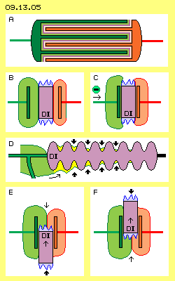
Links im Bild bei B ist ein einfacher Plattenkondensator skizziert, in den ein Dielektrikum (DI, violett) eingefügt ist. Dessen Permittivität erhöht nach gängigem Verständnis noch einmal die elektrische Kapazität ganz wesentlich und senkt in entsprechendem Umfang die Spannung zwischen beiden Platten. Es gibt verschiedene Ansätze zur vermeintlichen Erklärung. Real und verständlich ist nur folgender Sachverhalt: auch an den Oberflächen eines Isolators befindet sich Ladung. Aufgrund der amorphen Struktur kann sich aber kein homogenes Schwingen ausbilden. In den ´zerklüfteten Tälern und Bergen´ sind die Ladungen unterschiedlich stark. Ausgehend von vielen kleinen Flächen existiert ein Gewirr von Ätherbewegungen (hier durch die blauen Zacken repräsentiert).
Rechts im Bild bei C ist der Raum zwischen den Platten fast ganz ausgefüllt durch das Dielektrikum, so dass dort das Schwingen der Ladungen weitgehend eingeschränkt ist. Die Ladungen werden auf die beiden Außenseiten der Platten verdrängt. Wenn nun von links höhere Spannung ankommt (siehe Pfeil bei C), kann der ´Wulst´ am Rand sich nicht über das Dielektrikum nach rechts wölben. Die ´Elastizität´ zur Pufferung von Spannungs-Schwankungen ist damit stark eingeschränkt.
Im Bild ist bei D ein Isolator (DI, violett) für Hochspannungs-Leitungen skizziert. Wenn der Isolator nur als runder Zylinder gebaut wäre, könnte Ladung bei Spannungs-Spitzen bis nach rechts hinüber laufen. Bei dieser typischen ´Baumkuchenform´ kann die Ladung gelegentlich die erste Hürde überspringen (siehe Pfeil). Dieser Ladungsteil wird durch den Druck des Freien Äthers (siehe dicke Pfeile) in die ringförmige Delle gedrückt. Gelegentlich können Teile der Ladung auch den nächsten ´Hügel´ überwinden, wo sie erneut vom Freien Äther eingeklemmt werden. Letztlich ´verdunstet´ die dortige Ladung, weil deren Bewegungs-Struktur nicht flächendeckend und dauerhaft in sich stabil ist. Sie wird vom Freien Äther ´aufgerieben´, geht also über in die unstrukturierte Bewegung des umgebenden Äthers.
Coulomb-Kraft
Als ´universellen Ätherdruck´ bezeichne ich die Kraft, mit der Freier Äther auf geordnete Bewegungs-Strukturen wirkt. Die enorme Kraft kann man z.B. handgreiflich spüren, wenn man den Nord- und Südpol von zwei Stabmagneten in geringem Abstand auseinander halten will (siehe Kapitel 09.06. Magnete). Wenn zwischen beide Platten eines Kondensators ein Dielektrikum eingefügt wird, ist ein entsprechender Effekt zu beobachten. In Bild 09.13.04 unten bei E wird ein Dielektrikum (DI) von unten nach oben zwischen die Kondensator-Platten geschoben. Seltsamerweise wird das Dielektrikum dort hinein ´gezogen´ (siehe dünnen Aufwärts-Pfeil). Umgekehrt ist Kraft aufzuwenden, wenn das Dielektrikum wieder heraus genommen wird, z.B. bei F nach oben (siehe dünnen Aufwärts-Pfeil).
Die Ursache dieser ´Coulomb-Kraft´ ist folgende: Bei E befinden sich am oberen Ende des Dielektriums die beiden Ladungsfelder. Über diesen existiert ein gleitender Übergang zum Freien Äther. Dieser drückt also nur indirekt auf die obere Fläche des Dielektrikums (siehe dünnen Abwärts-Pfeil). Auf die untere Fläche des Dielektrikums bei E drückt der Freie Äther unmittelbar. Gegenüber diesen ´zerklüfteten Flächen und wirren Ladungen´ gibt es viele Orte gegenläufiger Bewegungen mit entsprechendem ´Stress´ im Äther und entsprechend hohem Äther-Druck auf das untere Ende des Dielektrikums (siehe dicker Aufwärts-Pfeil).
Rechts unten bei F ist die Situation umgekehrt: gegen den starken Druck des Äthers (hier von oben nach unten gerichtet) muss man das Dielektrium aus den Platten heraus ziehen. Das Dielektrikum wird also weder per Anziehung (vermeintlich positiver / negativer Ladungsträger) in die Platten hinein gezogen, noch darin festgehalten durch vermeintliche Anziehungskräfte. Es wirken immer nur Druckkräfte. Hier schieben sie das Dielektrikum zwischen die Platten hinein (bei E) und behindern andererseits das Herausnehmen (bei F). Beide Kräfte neutralisieren sich, so dass die Bewegung eines Dielektrikums durch einen Kondensator hindurch in Summe keinen Krafteinsatz erfordert.
Das ist eine kritische Situation für die geltende Physik-Theorie: es erfordert in Summe keinen Kraftaufwand, ein Dielektrikum durch einen Plattenkondensator hindurch zu führen. Dabei wird Ladung und/oder Spannung verändert, womit sich auch die gespeicherte Energie ändert, wobei der Faktor Spannung im Quadrat wirksam wird, womit die ´Gefahr´ besteht, ein Perpetuum Mobile bauen zu können. Diese Möglichkeit wird natürlich weg-diskutiert, gelegentlich mit dem Hinweis auf die unbedeutend kleinen Werte (was theoretisch dennoch eine klare Verletzung des Energie-Konstanz-Gesetzes ist).
Kugelförmige bzw. runde Kondensatoren
Probleme haben die Theoretiker auch mit kugelförmigen Speichern:
eine frei stehende Kugel ist insofern ein Spezialfall, als die Gegen-Elektrode weit entfernt ist, z.B. durch das Erdpotential gebildet wird. Die Kapazität dieser Bauform ist sehr gering - wenn man die generelle Formel Q=A/d*U anwendet. In der Praxis ist die Kapazität jedoch höher, kann eine Kugel auf Millionen Volt aufgeladen werden, bevor es zu einer Funkenentladung kommt. Die Kugel ist kein ´Spezialfall´, vielmehr weisen ihre Eigenschaften darauf hin, dass diese Formel die realen Prozesse nicht zutreffend beschreiben kann.
In Bild 09.13.06 ist eine Kugel (A, grau) mit leitender Oberfläche dargestellt. Wenn diese aufgeladen wird, entsteht rundum ein Bereich (B, hellgrün) synchronen Schwingens. An der Leiterfläche ist das Schwingen intensiv und wird nach außen schwächer mit einem fließenden Übergang zum Freien Äther der Umgebung. Man kann sich (vereinfachend) eine Grenze bzw. Membrane (dunkelgrün) vorstellen: außerhalb herrscht chaotische Bewegung, innerhalb ein geordnetes Schwingen. Der Äther ist überall gleich, nur die Charakteristik seiner Bewegung ist lokal unterschiedlich.
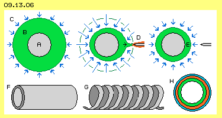
Die Kugelform ist ideal zur Speicherung von Ladung, weil das Volumen des geordneten Schwingens durch die kleinst mögliche Oberfläche eingeschlossen ist. Der allgemeine Ätherdruck (C, repräsentiert durch die blauen Pfeile rundum) drückt diese Bewegungsstruktur konzentrisch an die Kugel. Solange die eingeschlossene Bewegung eine in sich stabile Struktur aufweist, kann der äußere Druck dieses Volumen nicht weiter komprimieren (oder gar auflösen).
Wenn allerdings ein Leiter (D, grau, mit geringerer Ladung) in die Nähe der ´Ladungs-Membrane´ kommt, wird die Ordnung gestört. Ladung (hier rot) fließt an diesem Leiter ab und implosionsartig konzentriert sich der Ätherdruck (siehe blaue Pfeile). Extrem hohe Spannung entlädt sich über eine Funkenstrecke. Kurz danach wird diese ´chaotische´ Strömung durch den seitlichen Ätherdruck abgeschnitten und die restliche Ladung wieder konzentrisch an die Kugeloberfläche (E) gedrückt. Diese Funkenstrecke ist in manchen Anwendungen erwünscht. Soll aber eine Kugel im Sinne eines ´sanft´ arbeitenden Kondensators eingesetzt werden, müssen geeignete Wege zur Ladung und Entladung gewählt werden. Alternativen sind z.B. ein Kupfer-Rohr (F, mit geschlossenen Enden oder zumindest runden Kanten) oder eine Spule (G, die bekanntlich auch immer eine gewisse ´Kapazität´ aufweist).
Bei H ist ein Querschnitt durch eine Kugel bzw. ein Rohr dargestellt. Ein erstes Volumen von Ladung (grün) umgibt die Oberfläche. Wenn eine zusätzliche ´Ladungs-Portionen´ (rot) eingebracht wird, ist nur eine relativ geringe Ausweitung der ´Grenzfläche´ erforderlich. Jede weitere Ladung (blau) ist mit geringerem Widerstand des umgebenden Freien Äthers einzubringen. Umgekehrt kann der Freie Äther konzentrisch Druck bei der Entladung ausüben und bei hoher Spannung den raschen Abfluss der Ladung bewirken. Diese runden Bauformen eignen sich also besonders für die zeitweilige Speicherung von Ladung.
Doppel-Pack
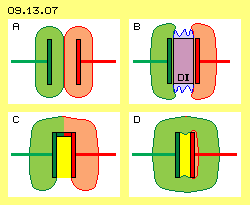
Ein anderer Extremfall ist in Bild 09.13.07 dargestellt: beide Platten sind gleich stark geladen (bei A, grün und rot markiert nur zur Unterscheidung der Felder). Es besteht damit keine (oder nur minimale) Spannung zwischen den Platten und gemäß Formel müsste damit die Kapazität nahezu unendlich sein. Wenn zusätzlich der Raum zwischen den Platten durch ein Dielektrikum (DI, violett) ausgefüllt wäre (bei B), würde theoretisch die Aufnahmefähigkeit noch einmal höher sein. Wenn keine Spannung zwischen den Platten besteht, könnten beide auch leitend miteinander verbunden sein (wie bei C dargestellt). Ein ´Faraday-Becher´ wäre gegeben - mit null Aufnahmefähigkeit für Ladung zwischen den Platten (gelb markiert). Auch hier zeigt sich wieder, dass die bekannten Kondensator-Formeln nicht greifen.
Unten rechts im Bild bei D ist obiger Schul-Kondensator noch einmal dargestellt. Die linke Platte war mit 5 kV geladen (grün), während die rechte Platte nur minimale Ladung (rot) aufwies. Die starke Ladung greift weit in den Raum hinaus und wird vom Ätherdruck auch an nahe liegende Oberflächen gedrückt. Die ganze Anordnung ist dann in eine ´Ladungswolke´ eingehüllt. Auch ohne leitende Verbindung bildet der Bereich zwischen den Platten praktisch einen Faraday-Käfig (gelb). Das Voltmeter zwischen beiden Platten wird nur eine geringe Spannung anzeigen - eventuell im Bereich dessen, was sich aus (der grundlegend falschen) Formel ergibt. Geringe Spannung ist nach diesen Formeln gleichbedeutend mit hoher Kapazität - aber die reale Aufnahmefähigkeit zwischen den Platten ist hier praktisch null.
Miss-Verständnisse
Die Kondensator-Formeln bilden nicht die reale Gegebenheiten ab. Klar zu messen ist der Spannungs-Abfall bei Annäherung beider Platten, aber aus diesem Symptom wurden falsche Schlussfolgerungen gezogen. Völlig falsche Vorstellungen ergeben sich aus der immer noch gelehrten Ansicht, es gäbe positive Ladung. Man geht bislang auch noch immer davon aus, dass Strom zustande kommt, indem Elektronen als Ladungsträger an einer Leiterfläche entlang fließen.
Das grundlegende Problem bei Kondensatoren ist, dass man Ladung als das Aufbringen von Elektronen an einer Leiteroberfläche betrachtet und von diesen ausgehend sich erst das elektrische Feld bildet.
Diese Dualität gibt es nicht. Es gibt sehr wohl freie Elektronen, deren Bewegungsmuster in Bild 09.13.08 in der linken Spalte dargestellt ist. Die S-förmig gekrümmten Verbindungslinien kennzeichnen benachbarte Ätherpunkte, die rundum synchron schwingen (siehe Pfeil). Nur so gleichen sich innerhalb dieses Volumens alle Bewegungen aus. Am Rand ist der Äther ´ruhend´ bzw. bildet dort den fließenden Übergang zum Freien Äther. Alle Querschnitte durch dieses Volumen zeigen die gleiche Charakteristik. In diesem Bild sind drei Phasen der Bewegung dargestellt (siehe rot markierte Kurven), deren Ablauf in obiger Animation verdeutlicht ist.
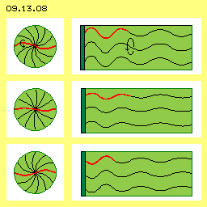
In der rechten Spalte ist das Bewegungsmuster einer Ladung dargestellt. Es sind analoge S-förmige Windungen, die aber von der Leiteroberfläche (dunkelgrün) nach außen weisen. Aller Äther schwingt parallel zueinander, wobei die Amplitude des Schwingens nach außen hin geringer wird, bis zum fließenden Übergang zum Freien Äther.
Wenn eine Leiteroberfläche geladen wird, werden keine Elektronen dort hin geschoben. Vielmehr wird der Äther um den Leiter und in seinem Umfeld in geordnetes Schwingen versetzt. Die Energie dieser Bewegung ist identisch mit dem elektrischen Feld. Diese 1.6 * 10^19 Elektronen sind nur das rechnerische Pendant zu einem Coulomb Ladung.
Meine gravierende Fehlinterpretation war wohl, den Begriff ´Kapazität´ als ´Aufnahmefähigkeit´ im wörtlichen Sinne zu verstehen. Die Begriffe ´Ladung/Kapazität/Spannung´ der Kondensatoren betrifft jedoch nur die Prozesse zwischen den Platten. Sie beschreiben nur das Volumen des ´Hin-und-Her-Schwappens´ von Ladung, bzw. stellen nur Kenngrößen dar für den ´Härtegrad´ beim Abfedern von Spannungsspitzen. Vielleicht sind einige der obigen Argumente hilfreich für ein besseres Verständnis der Prozesse. Allein das Bild der zwei Luftballone könnte auch für Experten eine realitäts-konforme Vorstellung ergeben.
Für mich brachten obige Analysen die Erkenntnis, dass konventionelle Plattenkondensatoren nicht tauglich sind für die Generierung von Strom. Dazu braucht man möglichst große Ladungen, die am besten auf frei stehenden und runden Leiterflächen zu handhaben sind. Zum andern wurde klar, dass und wie diese in den Raum hinaus ragenden ´Ladungswolken´ zu manipulieren sind. Der Bewegungsspielraum kann durch ein Dielektrikum wesentlich eingeschränkt werden (mit geringem Krafteinsatz). Eine starke Beeinflussung wird auch durch eine zweite geladene Leiterfläche erreicht - bis hin zur völligen Verdrängung von Ladung wie bei einem Faraday-Becher.
Rechenexempel
Bei obigem Abitur waren korrekte, aber fragwürdige Berechnungen angesagt. Mit nachfolgender Berechnung hoffe ich, realistische Größenordnungen ermitteln zu können. Ausgehend von einer Entladung (mit vorgegebenen Beispiel-Werten) wird auf die dazu notwendigen Parameter zurück geschlossen. In Bild 09.13.10 sind die Sachverhalte und Daten dargestellt, in der oberen Zeile zunächst die Ausgangs-Situation: Zwei frei stehende Kugeln (C1 und C2, grau) dienen als Ladungsspeicher. Beide sind jeweils (gegen Erde) mit 700 V aufgeladen. Zwischen beiden Kugeln besteht momentan also keine Spannung. Die Ladungsmengen betragen jeweils rund 0.06 Coulomb (grüner und roter Bereich). Dieses erstmalige Aufladen erfordert also einen Strom von zwei mal 0.06 Amperesekunden.
In der zweiten Zeile ist die zweite Phase dargestellt: die Hälfte der Ladung vom Ladungsspeicher C2 wird auf den Ladungsspeicher C1 übertragen (gelb markiert). Durch Einsatz eines Dielektrium und/oder einer anderen geladenen Fläche muss also Ladung von C2 verdrängt werden. Wie oben bei Bild 09.13.06 dargestellt, sind dazu runde Speicherflächen besonders geeignet (die technische Ausführung ist Gegenstand des folgenden Kapitels). Danach befindet sich auf C1 die erhöhte Ladung von 0.09 C und diese entspricht einer Spannung von 1050 V gegen Erde. C2 weist nurmehr eine Ladung von etwa 0.03 C auf, was einer Spannung gegen Erde von nur noch 350 V entspricht. Zwischen beiden Ladungsspeichern besteht dann eine relative Spannung von 700 V und eine Ladungs-Differenz von 0.06 C.
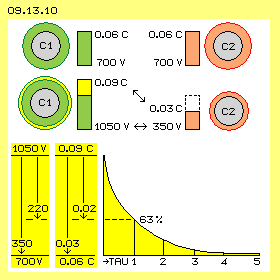
In einer dritten Phase findet der Ausgleich von Ladung zwischen C1 und C2 statt, so dass beide Ladungsträger wieder den Zustand der Ausgangs-Situation aufweisen. Die Daten und die Entlade-Kurve sind im Bild unten dargestellt. Bei dieser Entladung soll ein nutzbarer Strom entstehen, der z.B. bei 220 V eine Leistung von 1000 W ergibt. Die gewünschte Stromstärke ist I=P/U, hier also I=1000/220 = 4.5 A. Der Verbraucher kann dann einen Widerstand R=U/I, hier also R=220/4.5 = 50 Ohm aufweisen.
Aus diesem Widerstand (in Ohm) in Verbindung mit der Kapazität (in Farad) ergibt sich die Entladezeit (in Sekunden) nach Formel tau=R*C. Nach 5 Zeiteinheiten tau ist der komplette Ausgleich erreicht. Das soll hier auf maximal 0.02 Sekunden begrenzt sein. Nach der ersten Zeiteinheit tau sind bereits 63 % der Ladung abgeflossen. Dieser erste Zeitanteil ist wertvoll, weil bei hoher Spannung der wesentliche Teil der Ladung fließt. Eine Zeiteinheit tau soll hier also auf obige 0.02/5 = 0.004 s begrenzt sein. Durch Umstellung voriger Formel lässt sich die Kapazität ermitteln: C=tau/R, hier also C=0.004/50 = 0.00008 Farad. 1F=1As/1 V, somit ist 1As=1F*1V. Bei den gewünschten 220 V ergibt sich die Stromstärke I=0.00008*220 = 0.017 As. Es müssen also rund 0.02 Coulomb im ersten tau-Zeitabschnitt fließen.
Zu Beginn der Entladung besteht die Spannungsdifferenz 1050-350=700 V. Am Ende der Entladung weisen beide Speicher wieder jeweils 700 V (gegen Erde) auf, also keine Spannung zwischen den Speichern. Der einfache Mittelwert ist (700+0)/2=350 V. Dieser Spannungsabfall von 1050 V um 350 V auf 700 V ist unten links im Bild dargestellt. In der ersten Zeiteinheit fallen davon 63 %, also rund 220 V ab. Zugleich wird die Differenz der Ladungen (0.09 C gegenüber 0.03 C) wieder ausgeglichen (auf 0.06 C auf beiden Speichern). Es fließen also 0.03 Coulomb, davon im ersten tau-Zeitabschnitt rund 0.02 Coulomb. Aus diesem Sachverhalt ergaben sich also die 700 V und 0.06 Coulomb als erforderliche erste Aufladung.
Natürlich stimmt die Kontroll-Rechnung mit den anfangs geforderten Daten überein. Die Stromstärke ist I=Q/t, hier also I=0.02/0.004 = 5 A (gerundet, entsprechend obigen 4.5 A). Auch die Leistung P=U*I, hier also P=220*5 = 1100 W entspricht obiger Vorgabe (gerundet). Nach der Formel für die Energie W=0.5*C*U^2 für dieses Potential ergibt sich W=05*0.02*220^2 = 480 Ws.
Der erste Zeitabschnitt der Entladung dauert nur wenige Millisekunden, der komplette Ladungsaustausch aber etwa zwei Hundertstel Sekunden. Wenn man hundert solcher Strom-Impulse je Sekunde erreichen wollte, müssten vier solcher Anordnungen (zeitlich versetzt zueinander) arbeiten. Das ergäbe dann 480*100 Ws oder etwa 13 kWh, überschlägig als Bruttowert dieses Beispiels. Davon gehen ab die Energie für den Antrieb, für Verluste aus Reibung, an den Leitungen und zusätzlich erforderlichen Bauelementen. Bestenfalls sind hier 6 kWh zu erreichen. Wenn diese Überlegungen nicht total falsch sind, wäre brauchbare Leistung machbar.
Ladung und Spannung
Bei den Kondensatoren treten meist extrem kleine Werte von Ladung, Kapazität oder Spannung auf. Es ist darum die Frage, ob diese frei stehenden Ladungsflächen die notwendige Speicherkapazität und gewünschte Spannung zur Verfügung stellen können. In Bild 09.13.11 sind einige Werte graphisch dargestellt.
Ausgangspunkt ist eine Leiterfläche (dunkelgrün) von 1 m^2 und darüber ein Raum von 1 m Höhe. In diesem Volumen von 1 m^3 soll die Ladung von 1 Coulomb in Form des synchron schwingenden Äthers existieren. Auf der Oberfläche ´lastet´ der allgemeine Ätherdruck von 1 V (obere gelbe Fläche). Umgekehrt gilt dann: wenn man diese Leiterfläche mit 1 V lädt, ist die Ladung von 1 C auf diese Fläche aufgebracht, deren Feld noch in 1 m Höhe messbar ist.
Als Äquivalent zu 1 C wird die Menge von 1.6*10^19 freien Elektronen betrachtet. Eine Vorstellung von den ´astronomischen´ Zahlen macht dieser Vergleich deutlich: der Radius eines Elektrons wird mit etwa 10^-15 angegeben, d.h. auf 1 m Länge hätten (theoretisch) so viele Elektronen dicht neben einander Platz. Wenn dieser Kubikmeter Raum als ´Hochregallager´ betrachtet wird, gäbe es darin 10^45 Plätze für jeweils ein Elektron. Besetzt darin wären jedoch nur 10^19 Plätze (des einen Coulombs) und damit sind für jedes Elektron noch jeweils 10^26 Plätze frei (also eine extrem dünne Belegung). Das Feld besteht real nicht aus Elektronen, sondern aus dem Schwingen allen Äthers in diesem Kubikmeter. Die geordnete Bewegung von Ladung ist also nur ein extrem ´weiches´ Schwingen.
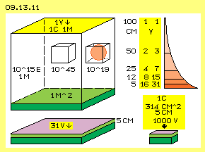
Die Ladung ist in diesem Volumen nicht gleichmäßig verteilt. Die Intensität des Schwingens ist dicht an der Leiterfläche am stärksten und nimmt (vermutlich) mit dem Quadrat der Entfernung ab (siehe rote Fläche oben rechts im Bild). Wenn man den ´Deckel´ dieses Raumes auf 50 cm absenkt (z.B. durch ein Dielektrikum), verdoppelt sich die Spannung. Nach gängiger Formel wären z.B. bei 5 cm schon 20 V gegeben. Ich vermute, dass man bei dieser Kompression den Anstieg der Spannung akkumulieren muss (jeweils bei Halbierung des Abstandes dann 1+2+4+8+16), sodass sich bei 5 cm etwa 31 V ergeben. Man muss somit etwa 31 V aufwenden, um in diesen Raum von 100*100*5 cm = 50 Liter (unten links im Bild) die Ladung von 1 Coulomb einzubringen.
Eine weitere Kompression in vertikaler Richtung macht wenig Sinn, weil die Spannung exponentiell ansteigt (und damit die Ladung seitlich hinaus drückt, bis zum Effekt eines Faraday-Bechers). Oder aber es wäre bei gleicher Spannung weit weniger Ladung in dem engen Raum zu speichern. Wenn man Ladung handhaben will, dann bis 5 cm über der Leiterfläche ohnehin ein großer Anteil der Ladung vorhanden (der durch einen isolierenden Deckel noch größer ist).
Beim Absenken dieses Deckels bleibt die Summe aller Energie des Ätherschwingens erhalten. Die oben skizzierten Spiral-Linien (Bild 09.13.07 rechts) werden kürzer und entsprechend weiter werden die Amplituden (praktisch wie wenn man eine Feder spiralig zusammen drückt). Das Schwingen ist aber noch immer relativ sanft und erlaubt durchaus eine weitere Kompression, z.B. indem die Fläche von 1 m^2 auf die 314 cm^2 des obigen Schul-Kondensators reduziert wird. Diese Fläche ist etwa 32 mal kleiner, entsprechend verdichtet ist das Schwingen (bildlich gesprochen: es passen mehr ´Spiralfedern´ in dieses Volumen, weil sie in der Höhe etwas versetzt zueinander eingeordnet werden). Der Spannungs-Druck ist dann 31*32, also rund 1000 V (im Bild unten rechts). In dieses Volumen von rund 1500 cm^3 bzw. 1.5 Liter kann also die Ladungsmenge von 1 Coulomb eingebracht werden durch Aufladung per 1000 V.
Das ist weit mehr als die zwei, drei oder neun Hundertstel Coulomb bei Spannungen von 220 bis 1050 V, mit denen in obigem Beispiel gerechnet wurde. Man braucht also keine 565 km^2 für ein Farad oder 5kV für winzige Ladungsmengen am Schul-Kondensator. Schon mit 1000 V lässt sich 1 C auf einer kleinen Leiterfläche (und wenigen Zentimeter Spielraum für die Ätherbewegung) unterbringen - und anschließend mit geringem Aufwand hin und her verschieben. Das ist kein ´unerwartetes´ Ergebnis, schließlich fließt 1 Ampere bei 220 V an jedem normalen Leitungsdraht entlang bzw. wird entsprechende Ladung mit 50 Hz hin und her gerüttelt. Damit sind alle Fakten aufbereitet, so dass im folgenden Kapitel die technische Realisierung anzugehen ist.